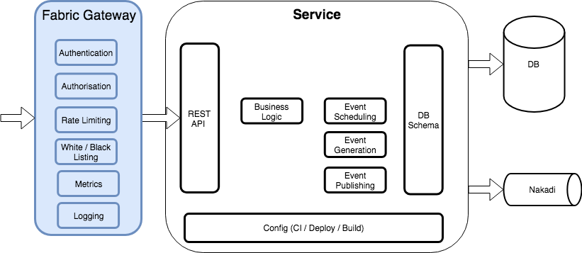

Fabric Gateway¶
Fabric Gateway is a Kubernetes control plane for Skipper, the open-source HTTP router. It delivers a feature-rich API gateway that secures applications at the point of ingress to a Kubernetes cluster. It is a security-audited and scalable solution that makes it easy for developers to secure and monitor APIs at scale.

Configuration¶
Fabric Gateway is configured via a Kubernetes Custom Resource Definition (CRD) of kind FabricGateway. To enable for an application create the FabricGateway resource in your cluster.
apiVersion: zalando.org/v1
kind: FabricGateway
metadata:
name: my-app-gateway
spec:
# Simple Mode with static Service
x-fabric-service:
- host: my-app.smart-product-platform-test.zalan.do
serviceName: my-app-service-name
servicePort: http
x-fabric-admins:
- bmooney
- fmoloney
- cgallagher
- jblogs
paths:
/api/resource:
post:
x-fabric-privileges:
- "spp-application.write"
x-fabric-ratelimits:
default-rate: 10
# Valid values are 'hour' and 'minute', defaults to 'minute' if omitted.
period: minute
target:
stups_spp_service_name: 50
/api/resource/*:
get:
x-fabric-privileges:
- "spp-application.read"
put:
x-fabric-privileges:
- "spp-application.write"
x-fabric-ratelimits:
default-rate: 10
patch:
x-fabric-privileges:
- "spp-application.write"
x-fabric-ratelimits:
default-rate: 10
/events:
post:
x-fabric-privileges:
- "spp-application.read"
Gateway can be configured to work in Dynamic Mode with an external Kubernetes service provider such as StackSets, or in Simple Mode with a static service defined. See Dynamic Mode and Simple Mode sub-sections below.
N.B. If using FabricGateway to manage auth for your service, remove any existing ingress resources for your service. You should not have both as an existing ingress could allow unauthenticated traffic to your backend service.
Dynamic Mode - Externally Managed Services (eg StackSets)¶
In Dynamic Mode Fabric Gateway will work with an external operator that manages the creation of Kubernetes services. This is enabled by setting the x-external-service-provider key as per the below example.
apiVersion: zalando.org/v1
kind: FabricGateway
metadata:
name: stackset-managed-test
spec:
x-external-service-provider:
hosts:
- stackset-managed-test.cluster.zalan.do
stackSetName: <name-of-stackset-k8s-resource>
paths:
/resources:
get: {}
In the above example, we are not defining any services (and it is illegal to define services via the x-fabric-service key if you have the x-external-service-provider set) in the Gateway resource. Instead, we are saying that these services will be provided by a StackSet operator. The created gateway will not generate any ingress resources until the named StackSet is present and has service details available.
Versioned Hosts¶
When using the stackset integration, the gateway will also configure a host for accessing each stack individually, ignoring traffic-switching. For example, if you have stacks my-stack-v1 and my-stack-v2 and the gateway operator has set VERSIONED_HOSTS_BASE_DOMAIN to cluster.zalan.do, you will be able to access the stacks at https://my-stack-v1.cluster.zalan.do and https://my-stack-v2.cluster.zalan.do respectively.
For these hosts:
- All authorization, cors and other configured rules will still apply.
- Rate-limiting is done by path and shared between hosts. This means you can use up the rate-limit by using any combination of versioned hosts and the main traffic-switched host. In the above example, hitting
https://my-stack-v1.cluster.zalan.do/api, thenhttps://my-stack-v2.cluster.zalan.do/api, thenhttps://my-stack.cluster.zalan.do/apicounts as 3 towards your rate-limit for the/apipath.
Simple Mode - Static Service¶
In Simple Mode an existing Kubernetes service is declared in the FabricGateway resource. This is done by setting the x-fabric-service key as per the below example.
apiVersion: zalando.org/v1
kind: FabricGateway
metadata:
name: stackset-managed-test
spec:
x-fabric-service:
- host: my-app.smart-product-platform-test.zalan.do
serviceName: my-app-service-name
servicePort: http
paths:
/resources:
get: {}
For servicePort, you must specify a named port from your service definition. If you don’t specify servicePort, Fabric Gateway defaults to a port named ‘http’.
Below is an example of a service with a named port:
apiVersion: v1
kind: Service
metadata:
labels:
application: "{{ APPLICATION }}"
version: "{{ VERSION }}"
name: "{{ APPLICATION }}"
spec:
selector:
application: "{{ APPLICATION }}"
type: ClusterIP
ports:
- name: http
port: 80
targetPort: 8080
Gateway Features¶
Fabric Gateway provides the following features.
- Authentication
- Authorization
- Admin Access
- Service Whitelisting
- Employee Whitelisting
- Encryption In Transit
- Rate Limiting
- Cross-Origin Resource Sharing
Authentication¶
Fabric Gateway can be used in place of internal logic for authenticating access from other services using the
Zalando IAM service. As we only accept service and employee tokens, the gateway is not a candidate for customer
auth workflows. There will be a header added to the request, X-TokenInfo-Forward.
This will contain the uid, scope and realm retrieved from from the Token Info endpoint.
Authorization¶
To confirm that each authenticated token is from a valid service or employee, the gateway will implicitly add a scope
check for the uid scope. It is possible to add further scope restrictions to an endpoint by adding the scope name to
the x-fabric-privileges key. For example if you have a privilege section for an endpoint defined as per below, then
the token will need the implicit uid scope as well as both of the defined events.write and service.write scopes before
it will be allowed to access the endpoint.
...
/events:
post:
x-fabric-privileges:
- "events.write"
- "service.write"
Admin Access¶
Team members can be added to your x-fabric-admins list. The uids in this list will have access to all endpoints and will not be subject to rate-limiting or other authentication rules.
Rate Limiting¶
If a client of the gateway is getting rate limited, they will get a 429
HTTP response code. There will also be some headers included to indicate
when they will be able to make requests again. Below is a sample rate limited
response from the gateway.
The Retry-After header, shows the number of seconds before you may attempt a new request.
The informational X-Rate-Limit header always shows the number of requests per hour which
the client is allowed to make, regardless of which period is used when configuring the rate-limit.
curl -i -H "Authorization: Bearer $FDA" https://fgtestapp.smart-product-platform-test.zalan.do/limited/me
HTTP/2 429
date: Tue, 26 Mar 2019 12:05:51 GMT
content-type: text/plain; charset=utf-8
content-length: 18
retry-after: 53
server: Skipper
x-content-type-options: nosniff
x-rate-limit: 120
N.B.
If you want to apply a service specific rate-limit, then the service name must be prepended with
stups_. This can be seen in the x-fabric-ratelimits.target section of the main Configuration
example above.
Encryption In Transit¶
The gateway will ensure that no requests are hitting your service
unless they are encrypted using https. To achieve this, we have a skipper
filter on every route, which will reject the request with a 400 response if
it contains the X-Forwarded-Proto: http header. This is an extra layer of
security to ensure that people are not interacting with your service in
an insecure manner.
An example request can be seen below:
curl -i -H "Authentication: Bearer $(ztoken)" http://fgtestapp.smart-product-platform-test.zalan.do/resources
HTTP/1.1 400 Forbidden
Date: Fri, 01 Mar 2019 10:38:05 GMT
Content-Type: text/plain; charset=utf-8
Content-Length: 104
Connection: keep-alive
Server: Skipper
{
"title": "Gateway Rejected",
"status": 400,
"detail": "TLS is required",
"type": "https://cloud.docs.zalando.net/howtos/ingress/#redirect-http-to-https"
}
Multiple Hosts¶
All created Skipper routes will match incoming requests first by their host.
If you have multiple hosts for a service, then each of these needs to be listed in the gateway resource.
Service Whitelisting¶
You can define either a global or a route-level whitelist for your gateway as per the below examples. What this means is that only services whose names are defined in the whitelist will be able to interact with your service. All other access requirements, i.e. scopes and rate limits, will still apply to the whitelisted service.
apiVersion: zalando.org/v1
kind: FabricGateway
metadata:
name: my-app-gateway
spec:
x-fabric-service:
- host: my-app.smart-product-platform-test.zalan.do
serviceName: my-app-service-name
servicePort: http
x-fabric-admins:
- jblogs
x-fabric-whitelist:
- stups_some-whitelisted-service
paths:
/api/resource:
get:
x-fabric-privileges:
- "spp-application.write"
post:
x-fabric-privileges:
- "spp-application.write"
# This is a more fine-grained whitelist and overrides the global whitelist. Only some-other-service can access this path.
# This id is taken from the "sub" field of a JWT token. For a service, this value is always "stups_" followed by the application's Kio id.
# some-whitelisted-service from the global whitelist cannot access this path.
x-fabric-whitelist:
service-list:
- stups_some-other-service
head:
x-fabric-privileges:
- "spp-application.read"
# Another type of fine-grained whitelist over-ride is to disabled whitelisting altogether and allow any
# service which has the correct scopes to access the route.
x-fabric-whitelist:
state: disabled
service-list: []
/api/resource/{resource_id}:
put:
# This whitelist config overrides the global whitelist and because of the empty whitelist
# no other service will be able to access this route. i.e. Only defined admins would be able to access the
# route
x-fabric-whitelist:
service-list: []
Employee Whitelisting¶
Employee tokens do not use scopes, so in order to allow certain employees access to an endpoint we must whitelist their uid. Note that this is different to Admin Access since admins are not subject to rate limits.
In the example below, we can see that the /api/resource get endpoint can be accessed by services with the spp-application.write scope or the employee whose uid is useruid. The service and the employee will be subject to a ratelimit of 5 requests per minute.
apiVersion: zalando.org/v1
kind: FabricGateway
metadata:
name: my-app-gateway
spec:
x-fabric-service:
- host: my-app.smart-product-platform-test.zalan.do
serviceName: my-app-service-name
servicePort: http
paths:
/api/resource:
get:
x-fabric-privileges:
- "spp-application.write"
x-fabric-employee-access:
user-list:
- useruid
x-fabric-ratelimits:
default-rate: 5
CORS Support¶
For browser applications to communicate directly with an API, the API needs to support Cross-Origin Resource Sharing. The Gateway supports this by automatically adding an OPTIONS endpoint to each of your paths to handle browser Preflight Requests. The origins and headers you configure will be allowed in the response headers. Additionally, configuring cors support causes the Access-Control-Allow-Origin header to contain the request’s Origin if you have whitelisted it here.
Note: We do not allow * to be used as an allowed origin. Every Gateway API will want to allow the Authorization and Content-Type headers here, to allow auth tokens and the application/json Content-Type to be used.
In the example below, they gateway will generate an OPTIONS route for the /api/resources path. This will support preflighted requests for your listed HTTP verbs, allowedOrigins and allowedHeaders. Once the preflight is done, the actual request will also automatically have the right Access-Control-Allow-Origin header if the request Origin is allowed.
apiVersion: zalando.org/v1
kind: FabricGateway
metadata:
name: my-app-gateway
spec:
x-fabric-service:
- host: my-app.smart-product-platform-test.zalan.do
serviceName: my-app-service-name
servicePort: http
x-fabric-cors-support:
allowedOrigins:
- example.com
- example-other.com
allowedHeaders:
- Authorization
- Content-Type
- X-Flow-Id
paths:
/api/resource:
get:
x-fabric-privileges:
- "spp-application.write"
Other¶
Path Matching¶
There are some rules around path matching in the gateway which are outlined below.
- Dynamic path segments should be represented by either a
*or a{named}parameter - Wildcard matching of multiple path segments can be performed by using
**, the**must be the last part of the path
Examples of some valid and invalid paths are outlined below:
apiVersion: zalando.org/v1
kind: FabricGateway
metadata:
name: my-app-gateway
spec:
x-fabric-service:
- host: my-app.smart-product-platform-test.zalan.do
serviceName: my-app-service-name
servicePort: http
x-fabric-admins:
- jblogs
paths:
# This is an exact path match. The only URI that will be matched is a GET request against `/api/resource`
/api/resource:
get:
x-fabric-privileges:
- "spp-application.read"
# Match a path which has a dynamic segment. This will match any identifer for the resource
# e.g. /api/resource/123 /api/resource/abc-123 etc...
# However this will only match a single path segment so the below would not be matched
# /api/resource/123/sub-resource
/api/resource/*:
get:
x-fabric-privileges:
- "spp-application.read"
# This is the exact same as the above dynamic segment matching, except that the segment is named.
# The name of the segment currently has no extra significance
/api/resource/{resource_id}:
get:
x-fabric-privileges:
- "spp-application.read"
# The double * is a wildcard match. This wildcard will match across multiple segments in the URI
# For example the following paths would be successfully matched:
# e.g. /api/someresource/123 /api/someresource/123/sub-resource /api/someresource/123/sub-resource/123
/api/someresource/**:
get:
x-fabric-privileges:
- "spp-application.read"
# There is a requirement for ** to be at the end of the path. The below path key would be considered
# invalid
/api/someresource/**/subkey:
get:
x-fabric-privileges:
- "spp-application.read"